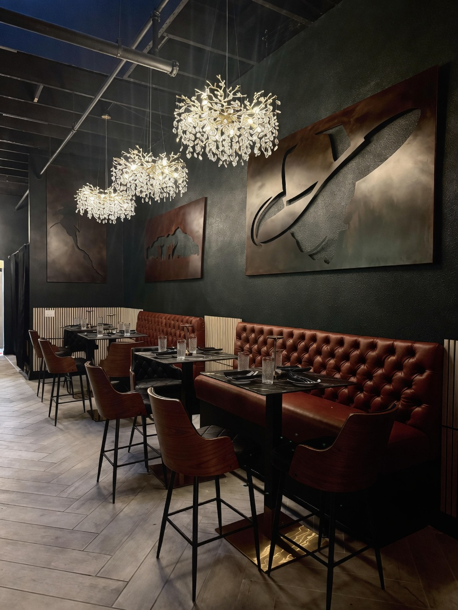
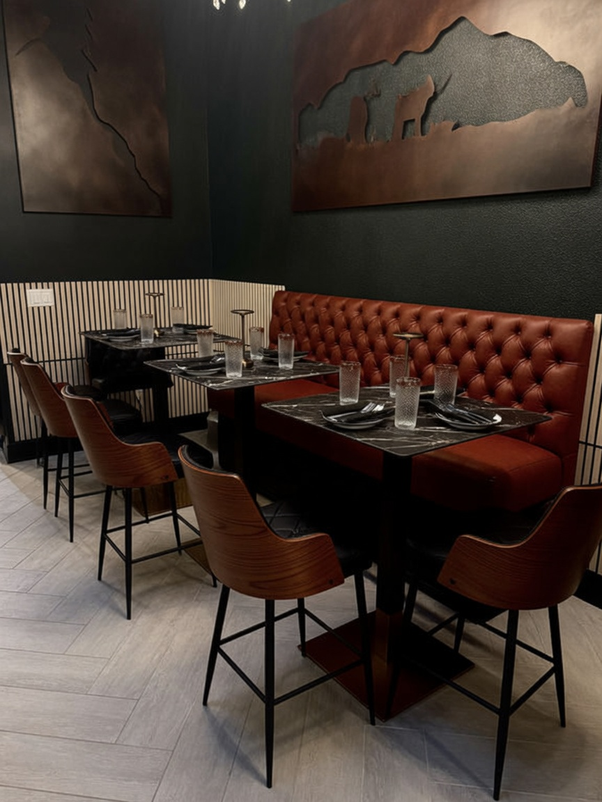
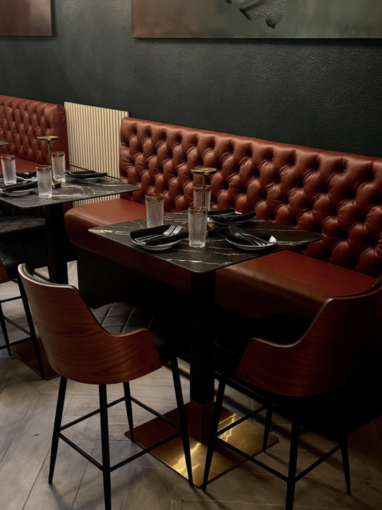
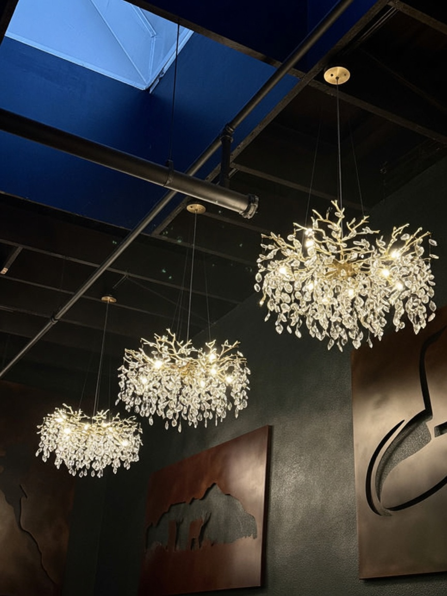

Bone Marrow Tartare
28Filet tartare · quail egg · crostini

Steakhouse · Seguin, Texas
Nestled in the heart of Seguin, our steakhouse was built with a simple belief: great food, genuine hospitality, and good company never go out of style.
The Black Door · Seguin, Texas
Here, every steak tells a story of tradition, community, and pride in doing things the right way. Inspired by the rich traditions of Texas steakhouses and the character of this historic town, we’ve created a place where every meal is meant to be savored — from a quiet dinner over cocktails to celebrations shared around the table.
The dining room
From a quiet dinner over cocktails to celebrations shared around the table — our room in the heart of Seguin sets the stage.



Nestled downtown — our steakhouse was built with a simple belief about how dinner should feel.
Inspired by the rich traditions of Texas steakhouses and the character of this historic town.
Quiet dinners over cocktails or celebrations shared — every meal is meant to be savored.
Reservations
Reserve ahead on OpenTable, or call us. We look forward to seeing you.
4:00 PM – 10:00 PM
Seguin, TX 78155
Follow for openings & nights
Find us
Inspired by Texas steakhouse tradition and the character of this historic town — we hope you’ll join us.